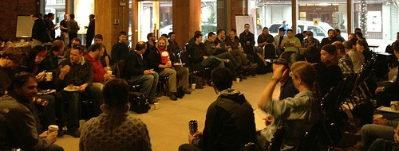

|
This page last changed on Feb 07, 2012 by tom@opscode.com.
|
Welcome
The first step in contributing to any Opscode-sponsored project is reviewing and completing the steps outlined on the How to Contribute page.
Next you should make sure you're subscribed to both the 'chef' and 'chef-dev' Mailing Lists which is where a lot of the community discussion happens.

How to help
There are many ways to help with the project.
- Assist other users on the Mailing Lists or on IRC.
- Scratch your own itch and add features
- Improve the code by adding unit tests to uncovered code
- Add wiki documentation, such as how to run and write unit tests
- Review [old] open tickets and ensure they are [still] reproducible
- ... and then provide a fix for that ticket
- Review github pull requests for projects that don't have an associated ticket number and find it, or ask the contributor for one.
- Add small or concise tasks to the list below to help people get started
Specific projects
These items could be completed by anyone. This list shouldn't be work you want someone to do for you, but rather small projects that you think someone new to the project could pick up and help with.
- CHEF-1771 adds support for configuring certain EC2 values to your knife configuration file. It may need to be moved to the KNIFE-EC2 project. Last we knew, it was breaking a number of spec tests and could use some work.
- Someone familiar with debian/ubuntu should try to figure out why the packaging for Chef still sometimes fails when rabbitmq is already configured. The success of this differs on releases, so even just testing a release and documenting what you tried and what the result was would help. Relevant tickets are CHEF-2472 and CHEF-2296. It looks like CHEF-2296 has a fix, it just needs to be written into http://github.com/opscode/opscode-packages.
- CHEF-1367 came up with ideas on how to make remote_file not download a file if it hadn't changed, but the original reporter never completed a CLA so we need to do this work ourselves. Tollef did something similar for the http_request resource in CHEF-1577 so it should be pretty easy to do here as well, although that might eventually mean upfactoring some shared code.
- The community drupal cookbook could stand to have the final installation steps automated with drush. More information in COOK-976.
|
|
|

{kind=link}